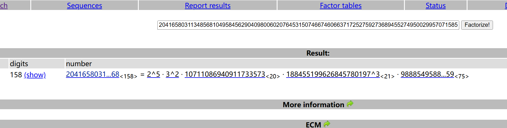

unictf
Subgroup-Weaver解题步骤：
分析代码，发现求出正确的key发给服务器就可以拿到flag
key的产生:
key = randbytes(64)#64字节随机
分析这个随机数生成器发现问题 : randint(1, 7) % 2输出1和0的概率并不相等，存在统计偏差P ( random_bit = 1 ) = 4 / 7 ≈ 57.14 % P(\text{random\_bit} = 1) = 4/7 \approx 57.14\% P ( random_bit = 1 ) = 4/7 ≈ 57.14% P ( random_bit = 0 ) = 3 / 7 ≈ 42.86 % P(\text{random\_bit} = 0) = 3/7 \approx 42.86\% P ( random_bit = 0 ) = 3/7 ≈ 42.86%
题目中的加密方式是：output = key ^ random_streamk i = 0 k_i = 0 k i = 0 output i = 0 ⊕ random i = random i \text{output}_i = 0 \oplus \text{random}_i = \text{random}_i output i = 0 ⊕ random i = random i 1 1 1 k i = 1 k_i = 1 k i = 1 output i = 1 ⊕ random i = ¬ random i \text{output}_i = 1 \oplus \text{random}_i = \neg \text{random}i output i = 1 ⊕ random i = ¬ random i 1 1 1 3 / 7 3/7 3/7 i i i k i = 1 k_i = 1 k i = 1 0 0 0
exp：
1 2 3 4 5 6 7 8 9 10 11 12 13 14 15 16 17 18 19 20 21 22 23 24 25 26 27 28 29 30 31 32 33 34 35 36 37 38 39 40 41 42 43 44 45 46 47 48 49 50 51 52 53 54 55 56 57 58 59 from pwn import *from Crypto.Util.number import long_to_bytesimport sys'info' 'nc1.ctfplus.cn' , 15215 )def get_otp_samples (count=1200 ):print (f"[*] Collecting {count} samples" )for i in range (count):if i % 100 == 0 :f'\r{i} ' )b'> ' , b'' ) try :int (line))except ValueError:pass return samplesdef recover_key (samples, bit_length=512 ):"""通过统计偏差恢复密钥""" 0 for i in range (bit_length):0 for num in samples:if (num >> i) & 1 :1 len (samples)if freq < 0.5 :1 << i)return recovered_key_intdef main ():1000 )hex ()print (f"[+] Recovered Key (Hex): {key_hex} " )print ("[*] Sending key..." )b'> ' , key_hex.encode())print (f"{response.decode().strip()} " )if __name__ == '__main__' :
NTRU解题步骤：
点名了ntru问题，加密公式为：
c ≡ r ⋅ h + m ( m o d q ) c \equiv r \cdot h + m \pmod q
c ≡ r ⋅ h + m ( mod q )
题目明确给出 r r r ± 1 \pm 1 ± 1
m ≡ c − r ⋅ h ( m o d q ) m \equiv c - r \cdot h \pmod q
m ≡ c − r ⋅ h ( mod q )
exp(ai梭的)：
1 2 3 4 5 6 7 8 9 10 11 12 13 14 15 16 17 18 19 20 21 22 23 24 25 26 27 28 29 30 31 32 33 34 35 36 37 38 39 40 41 42 43 44 45 46 47 48 49 50 51 52 53 54 55 56 57 58 59 import itertools31 257 12289 9603 , 11838 , 1242 , 5868 , 12249 , 3130 , 3722 , 5910 , 5879 , 7672 , 1119 , 339 , 10748 , 7310 , 6370 , 9353 , 10589 , 10739 , 10213 , 2560 , 5132 , 4889 , 11292 , 2649 , 2556 , 8037 , 3146 , 9533 , 11563 , 1554 , 304 ]91 , 11459 , 932 , 4345 , 12153 , 9504 , 5147 , 7268 , 2493 , 8891 , 8712 , 5785 , 11608 , 7683 , 11327 , 8453 , 10380 , 6004 , 7849 , 1622 , 6154 , 10369 , 10278 , 769 , 11676 , 11492 , 4564 , 5445 , 10909 , 11502 , 12216 ]def solve ():print (f"[*] 开始穷举 r (权重=4, N={N} )..." )for indices in itertools.combinations(range (N), 4 ):for signs in itertools.product([-1 , 1 ], repeat=4 ):0 ] * Nfor i in range (4 ):for k in range (N):True for k in range (N):if not (0 <= val < 128 ): False break if valid_ascii:try :"" .join(chr (x) for x in m_candidate)if "{" in flag or "flag" in flag.lower() or "ctf" in flag.lower():print (f"\n[+] 找到潜在 Flag!" )print (f"Indices: {indices} " )print (f"Signs: {signs} " )print (f"Message (int): {m_candidate} " )print (f"Flag: {flag} " )return except :pass if __name__ == "__main__" :
subgroup_dlp解题步骤：
离散对数问题
c ≡ 7 m ( m o d n ) c \equiv 7^m \pmod n
c ≡ 7 m ( mod n )
注意到这里的n是一个偶数，结合同余的性质，可以考虑分解因子n，拆分同余方程后再使用中国剩余定理求解。

n = 2 5 ⋅ 3 2 ⋅ p 1 ⋅ p 2 3 ⋅ p 3 n = 2^5 \cdot 3^2 \cdot p_1 \cdot p_2^3 \cdot p_3
n = 2 5 ⋅ 3 2 ⋅ p 1 ⋅ p 2 3 ⋅ p 3
分别求解：7 m 1 ≡ c ( m o d 2 5 ) 7^{m_1} \equiv c \pmod {2^5} 7 m 1 ≡ c ( mod 2 5 ) 7 m 2 ≡ c ( m o d 3 2 ) 7^{m_2} \equiv c \pmod {3^2} 7 m 2 ≡ c ( mod 3 2 ) 7 m 3 ≡ c ( m o d p 1 ) 7^{m_3} \equiv c \pmod {p_1} 7 m 3 ≡ c ( mod p 1 ) 7 m 4 ≡ c ( m o d p 2 3 ) 7^{m_4} \equiv c \pmod {p_2^3} 7 m 4 ≡ c ( mod p 2 3 ) 7 m 5 ≡ c ( m o d p 3 ) 7^{m_5} \equiv c \pmod {p_3} 7 m 5 ≡ c ( mod p 3 ) 2 5 ， 3 2 2^5 ，3^2 2 5 ， 3 2 p 1 , p 3 p_1,p_3 p 1 , p 3 s a g e m a t h sagemath s a g e ma t h d i s c r e t e l o g discrete_log d i scre t e l o g p 2 p_2 p 2 7 m 4 ≡ c ( m o d p 2 ) 7^{m_4} \equiv c \pmod {p_2} 7 m 4 ≡ c ( mod p 2 )
解题脚本(东拼西凑的)：
1 2 3 4 5 6 7 8 9 10 11 12 13 14 15 16 17 18 19 20 21 22 23 24 25 26 27 28 29 30 31 32 33 34 35 36 37 38 39 40 41 42 43 44 45 46 47 48 49 50 51 52 53 54 55 56 57 58 59 60 61 62 63 64 65 66 67 68 69 70 71 72 73 74 75 76 77 78 79 80 81 82 83 84 85 86 87 88 89 90 91 92 93 94 95 96 97 98 99 100 101 102 103 104 105 106 from sage.all import *from Crypto.Util.number import long_to_bytes20416580311348568104958456290409800602076453150746674606637172527592736894552749500299570715851384304673805100612931000268540860237227126141075427447627491168 8195229101228793312160531614487746122056220479081491148455134171051226604632289610379779462628287749120056961207013231802759766535835599450864667728106141697 10711086940911733573 188455199626845780197 988854958862525695246052320176260067587096611000882853771819829938377275059 2 **5 , 3 **2 , p1, p3]for factor in factors:7 )ord =order)7 )ord =order)def linear_lift (g, c, p, k ):""" 功能: 求解 g^x = c mod p^k 原理: 先求 x0 = dlog(c) mod p, 然后线性提升到 p^k """ for i in range (1 , k):1 )1 ) // p**i1 ) * p**(i-1 )1 ) // p**ireturn x7 , c, p2, 3 )print (f'{m4} ' )''' 据说sage好像可以自动升次？？？ 但笔者这里的是ai梭的 p-adic ''' 3 7 ).multiplicative_order()print (f"解: {remainders} " )print (f"模: {moduli} " )print (f"m: {m} " )print (f"\n{flag.decode()} " )''' 3607318467090477073783352030357123895792830141955325751309814 解: [0, 1, 1224347636342905336, 106155541015491325739788391904987578874651584430962292283925150916550296688, 3607318467090477073783352030357123895792830141955325751309814] 模: [4, 3, 1785181156818622262, 988854958862525695246052320176260067587096611000882853771819829938377275058, 3346527342866541318314435408576449342128783035050376199173282] m: 4474399909953905361921883374365168306769114394248549045511770939283217915925636422542946623049100947407711381893061133594122679245785692770312361479241728 UniCTF{Th1s_DLP_probl3m_i5_v3ry_s1mpl3_f0r_y0u!!!} '''
subgroup_Scribe
1.题目到底干嘛？
服务端会玩 128 轮游戏。
它随机生成一个 key
你发一段数据 msg 给它
它会利用key对你的msg加密
然后随机决定：
你要猜：这是不是“真的加密结果”
连续猜对 128 次给 flag。
所以目标是：
设计一个特殊的 msg
让“真加密”一定有某种规律
“随机串”几乎不可能有这种规律
然后稳定区分
2.加密
ECB 模式：
漏洞：
这个 sbox 有个性质：
它循环 128 次就会回到原值
代码key1
3.现在的目标变成：
设计两个 block：
让它们在“同 key”下加密时，
真加密 → 一定满足关系
随机串 → 几乎不可能满足
第一个块：
[ C 1 , C 2 , C 3 , C 4 ] [C_1, C_2, C_3, C_4]
[ C 1 , C 2 , C 3 , C 4 ]
而 [1, 1, 1, 0] 的输出状态会紧紧跟随着它，变为：
[ 1 ⊕ C 1 , 1 ⊕ C 2 , 1 ⊕ C 3 , T ( C 1 ⊕ C 2 ⊕ C 3 ⊕ C 4 ⊕ k 4 ⊕ 1 ) ] [1 \oplus C_1, 1 \oplus C_2, 1 \oplus C_3, T(C_1 \oplus C_2 \oplus C_3 \oplus C_4 \oplus k_4 \oplus 1)]
[ 1 ⊕ C 1 , 1 ⊕ C 2 , 1 ⊕ C 3 , T ( C 1 ⊕ C 2 ⊕ C 3 ⊕ C 4 ⊕ k 4 ⊕ 1 )]
我们就可以依靠这个进行判断:C 1 ⊕ ( 1 ⊕ C 1 ) = 1 C_1 \oplus (1 \oplus C_1) = \mathbf{1} C 1 ⊕ ( 1 ⊕ C 1 ) = 1 C 2 ⊕ ( 1 ⊕ C 2 ) = 1 C_2 \oplus (1 \oplus C_2) = \mathbf{1} C 2 ⊕ ( 1 ⊕ C 2 ) = 1 C 3 ⊕ ( 1 ⊕ C 3 ) = 1 C_3 \oplus (1 \oplus C_3) = \mathbf{1} C 3 ⊕ ( 1 ⊕ C 3 ) = 1 diff_words[0], [1], [2]T ( x ) ⊕ T ( x ⊕ 1 ) T(x) \oplus T(x \oplus 1) T ( x ) ⊕ T ( x ⊕ 1 ) Δ = T ( x ) ⊕ T ( x ⊕ 1 ) \Delta = T(x) \oplus T(x \oplus 1) Δ = T ( x ) ⊕ T ( x ⊕ 1 )
4.攻击思路
我们提前算好这 256 种可能：
1 2 3 4 delta_list = { 1 ) for i in range (256 )
存到一个列表
发 129 个 block
收到 hint
取：
做异或
看是否落在那 256 种差分里
如果在：
怎么算出的128种可能?
1 2 代码x =
而 1 在 32-bit 里是：
1 2 1 = 0 x00000001 [ 00 ] [ 00 ] [ 00 ] [ 01 ]
所以：
代码x ⊕ 1 只会影响最低字节 B0（因为只有最后那个 01 在动）
过 tau（逐字节 sbox）时，变化“仍然只在 1 个字节”
1 2 tau (x) [ S(B3) ] [ S(B2) ] [ S(B1) ] [ S(B0) ] tau (x⊕1 ) [ S(B3) ] [ S(B2) ] [ S(B1) ] [ S(B0⊕01) ]
于是 tau 后的差分（异或）是：
Δ t a u = t a u ( x ) ⊕ t a u ( x ⊕ 1 ) = [ 00 ] [ 00 ] [ 00 ] [ S ( B 0 ) ⊕ S ( B 0 ⊕ 01 ) ] Δtau = tau(x) ⊕ tau(x⊕1)
= [ 00 ] [ 00 ] [ 00 ] [ S(B0) ⊕ S(B0⊕01) ]
Δ t a u = t a u ( x ) ⊕ t a u ( x ⊕ 1 ) = [ 00 ] [ 00 ] [ 00 ] [ S ( B 0 ) ⊕ S ( B 0 ⊕ 01 )]
B0 的取值只有 0..255 共 256 种所以 S(B0) ⊕ S(B0⊕1) 只由 B0 决定,最多也就 256 种
过线性层 L 后，还是256种(线性的变化不会改变)
1 2 3 4 5 6 7 8 9 10 11 12 13 14 15 16 17 18 19 20 21 22 def rotl (x, n ):return ((x << n) & 0xFFFFFFFF ) | (x >> (32 - n))def tau (a ):return ((sbox[(a >> 24 ) & 0xFF ] << 24 ) |16 ) & 0xFF ] << 16 ) |8 ) & 0xFF ] << 8 ) |0xFF ])def L (b ):return b ^ rotl(b, 2 ) ^ rotl(b, 10 ) ^ rotl(b, 18 ) ^ rotl(b, 24 )def T (x ):return L(tau(x))set ()for d in range (256 ):1 )
5.exp
1 2 3 4 5 6 7 8 9 10 11 12 13 14 15 16 17 18 19 20 21 22 23 24 25 26 27 28 29 30 31 32 33 34 35 36 37 38 39 40 41 42 43 44 45 46 47 48 49 50 51 52 53 54 55 56 57 58 59 60 61 62 63 64 65 66 67 68 69 from pwn import remote"example.com" 1337 bytes .fromhex("00000001" "00000001" "00000001" "00000000" def bxor (a: bytes , b: bytes ) -> bytes :return bytes (x ^ y for x, y in zip (a, b))def build_msg (T: int = 16 ) -> bytes :for t in range (T):for i in range (128 ):2 * i) & 0xFF bytearray (16 )0 :2 ] = t.to_bytes(2 , "big" )3 ] = v4 :6 ] = (t ^ 0x1234 ).to_bytes(2 , "big" )7 ] = v8 :10 ] = (t ^ 0xBEEF ).to_bytes(2 , "big" )11 ] = vbytes (b))for b in blocks]b"" .join(blocks + blocks2)assert len (set (msg[i:i+16 ] for i in range (0 , len (msg), 16 ))) * 16 == len (msg)return msgdef decide_coin (hint: bytes , T: int ) -> int :16 ] for i in range (0 , len (hint), 16 )]for t in range (T):for i in range (128 ):128 + i]128 + i]if 0 in d[12 :16 ]: return 1 return 0 def main ():16 hex ().encode()for r in range (128 ):b"msg > " )assert line.startswith("hint: " )"hint: " , 1 )[1 ]bytes .fromhex(hint_hex)b"give me coin > " )str (decide_coin(hint, T)).encode())print (io.recvall().decode(errors="ignore" ))if __name__ == "__main__" :
subgroup_lattice
题目在干什么？
1 2 3 4 5 6 7 8 9 10 11 12 13 14 class PRNG : def __init__ (self, state ): self .mask = 2147483647 self .state = [s & self .mask for s in state] def next (self ): 0 for i in range (len (self .state)): self .state[i] * C[i]) % self .mask self .state = self .state[1 :] + [tmp] return tmp def getrandbits (self, k ): return self .next () >> (self .mask.bit_length() - k)
这就是：
a i + 16 = ∑ j = 0 15 C j a i + j ( m o d m ) a_{i+16} = \sum_{j=0}^{15} C_j a_{i+j} \pmod m
a i + 16 = j = 0 ∑ 15 C j a i + j ( mod m )
其中：
阶数 n = 16
模数 m = 2³¹−1
只输出 高 17 位
低 14 位被截断
即：
a i = 2 14 y i + z i a_i = 2^{14} y_i + z_i
a i = 2 14 y i + z i
y i y_i y i z i < 2 14 z_i < 2^{14} z i < 2 14
程序最后判断：if ans == sum(s):
要恢复初始 state s 0 , … , s 15 s_0, …, s_{15} s 0 , … , s 15 https://eprint.iacr.org/2025/2323.pdf
1.分析
有一个 Fibonacci Z/(m)-LFSR：
a i + n ≡ c n − 1 a i + n − 1 + … + c 0 a i ( m o d m ) a_{i+n} ≡ c_{n-1}a_{i+n-1}+…+c_0a_i \pmod m
a i + n ≡ c n − 1 a i + n − 1 + … + c 0 a i ( mod m )
且每个数被截断：
a i = 2 β y i + z i a_i = 2^{β}y_i + z_i
a i = 2 β y i + z i
y_i：已知高位
z_i：未知低位
0 ≤ z_i < 2^β
用 y_i 恢复 c_i 和初始状态。
论文的关键是：
F ( a i ) ≡ 0 ( m o d m ) F(a_i) ≡ 0 \pmod m
F ( a i ) ≡ 0 ( mod m )
即:
∑ η i a i + j ≡ 0 ( m o d m ) \sum η_i a_{i+j} ≡ 0 \pmod m
∑ η i a i + j ≡ 0 ( mod m )
这种多项式叫：
a n n i h i l a t i n g p o l y n o m i a l ( 消去多项式 ) annihilating polynomial(消去多项式) annihi l a t in g p o l y n o mia l ( 消去多项式 )
为什么这么做？
f ( x ) = x n − c n − 1 x n − 1 − … − c 0 f(x)=x^n-c_{n-1}x^{n-1}-…-c_0
f ( x ) = x n − c n − 1 x n − 1 − … − c 0
一定整除所有 a n n i h i l a t i n g p o l y n o m i a l annihilating polynomial annihi l a t in g p o l y n o mia l a n n i h i l a t i n g p o l y n o m i a l annihilating polynomial annihi l a t in g p o l y n o mia l
2.解答
如何去求解消去多项式F ( x ) = η 0 + η 1 x + … + η r − 1 x r − 1 F(x)=η_0+η_1x+…+η_{r-1}x^{r-1} F ( x ) = η 0 + η 1 x + … + η r − 1 x r − 1
消去多项式满足
η = ( η 0 , … , η r − 1 ) η=(η_0,…,η_{r-1})
η = ( η 0 , … , η r − 1 )
∑ i = 0 r − 1 η i a i + j ≡ 0 ( m o d m ) \sum_{i=0}^{r-1} η_i a_{i+j} ≡ 0 \pmod m
i = 0 ∑ r − 1 η i a i + j ≡ 0 ( mod m )
运用已知：a i = 2 β y i + z i a_i=2^{β}y_i+z_i a i = 2 β y i + z i
∑ η i ( 2 β y i + z i ) ≡ 0 ( m o d m ) \sum η_i(2^{β}y_i+z_i) ≡ 0 \pmod m
∑ η i ( 2 β y i + z i ) ≡ 0 ( mod m )
整理：
2 14 ∑ i = 0 r − 1 η i y i + j ≡ − ∑ i = 0 r − 1 η i z i + j ( m o d m ) 2^{14} \sum_{i=0}^{r-1} \eta_i y_{i+j} \equiv - \sum_{i=0}^{r-1} \eta_i z_{i+j} \pmod m
2 14 i = 0 ∑ r − 1 η i y i + j ≡ − i = 0 ∑ r − 1 η i z i + j ( mod m )
等式右边的 z i + j z_{i+j} z i + j 2 14 2^{14} 2 14 η i \eta_i η i m m m η i \eta_i η i m m m
按论文造格：
a 0 , a 1 , ⋯ , a 140 a_0,a_1,\cdots,a_{140}
a 0 , a 1 , ⋯ , a 140
( m m ⋱ m K a 0 K a 1 ⋯ K a t − 1 K K a 1 K a 2 ⋯ K a t K ⋮ ⋮ ⋮ ⋱ K a r − 1 K a r ⋯ K a 140 K ) \left(\begin{matrix}
m&&&&&&&&\\
&m&&&&&&&\\
&&\ddots&&&&&&\\
&&&m&&&&&\\
Ka_0&Ka_1&\cdots&Ka_{t-1}&K&&&\\
Ka_1&Ka_2&\cdots&Ka_{t}&&K&&\\
\vdots&\vdots&&\vdots&&&\ddots&\\
Ka_{r-1}&Ka_{r}&\cdots&Ka_{140}&&&&K\\
\end{matrix}\right) m K a 0 K a 1 ⋮ K a r − 1 m K a 1 K a 2 ⋮ K a r ⋱ ⋯ ⋯ ⋯ m K a t − 1 K a t ⋮ K a 140 K K ⋱ K K = 2 14 , r = t = 71 K=2^{14},r=t=71 K = 2 14 , r = t = 71 s ( s ≥ 2 ) s(s\ge 2) s ( s ≥ 2 ) t t t K K K Z m \mathbb{Z}_m Z m p 1 , p 2 , ⋯ , p s p_1,p_2,\cdots,p_s p 1 , p 2 , ⋯ , p s s s s
f ( x ) = x n − c n − 1 x n − 1 − … − c 0 f(x)=x^n-c_{n-1}x^{n-1}-…-c_0
f ( x ) = x n − c n − 1 x n − 1 − … − c 0
就可以还原c i c_i c i
3.exp
恢复C
1 2 3 4 5 6 7 8 9 10 11 12 13 14 15 16 17 18 19 20 21 22 23 24 25 26 27 28 29 30 31 32 33 34 35 36 37 38 39 40 41 42 43 44 45 46 47 48 49 50 51 52 53 54 55 56 57 58 59 60 61 62 63 64 65 66 67 68 69 70 71 72 73 74 75 76 77 78 79 80 81 82 83 84 85 86 87 88 89 90 91 92 93 94 95 96 97 98 99 100 101 102 103 104 105 106 107 108 109 110 111 112 113 114 115 116 117 118 119 120 121 122 123 124 125 126 127 128 129 130 131 132 133 134 135 136 137 138 139 140 141 142 143 144 145 146 147 148 149 150 151 152 153 154 155 156 157 158 159 160 161 162 163 164 165 166 167 168 169 170 171 172 173 174 175 176 177 from sage.all import *from pwn import *2147483647 16 17 14 2 **beta 80 80 5 'info' def get_hints ():try :"nc1.ctfplus.cn" , 31840 )except :print ("[-] 连接失败，请检查网络或题目地址" )0 )print (f"[*] 正在收集 {num_hints} 个 Hint 数据 (用于恢复系数)..." )"Fetching" )for i in range (num_hints):b">>> " , b"2" )b"hint: " )try :int (line))except ValueError:f"收到无效数据: {line} " )0 )if i % 10 == 0 :f"{i} /{num_hints} " )f"成功收集 {len (hints)} 个数据" )return hintsdef recover_coefficients (hints ):print (f"[*] 构建格矩阵 L (维度: {r+t} x {r+t} )..." )for i in range (t):for i in range (r):for j in range (t):print ("[*] 正在运行 BKZ-20 格规约算法 (可能需要 10-30 秒)..." )20 )print ("[*] 格规约完成，正在提取零化多项式..." )'x' )for row_idx in range (dim): True for j in range (r):if val % shift != 0 :False break if valid:sum (coeffs[j] * (x**j) for j in range (r))if poly != 0 and poly.degree() >= n:print (f"[*] 找到 {len (candidates)} 个候选多项式。" )if not candidates:print ("[-] 未找到有效多项式，请尝试增加 r 和 t 的值。" )return None print ("[*] 正在通过 GCD 计算特征多项式..." )0 ]for i in range (1 , min (20 , len (candidates))): if next_poly.degree() == 0 :continue if final_poly.degree() == n:print (f"[+] 成功锁定度数为 {n} 的多项式！" )break if final_poly.degree() != n:print (f"[-] 警告: 最终多项式度数为 {final_poly.degree()} (期望 {n} )。" )print ("[-] 可能是数据不足或参数 r/t 需要调整。" )return None print (f"[*] 特征多项式: {final_poly} " )for i in range (n):int (c))print ("\n" + "=" *50 )print (f"[SUCCESS] 系数 C 恢复成功!" )print (f"C = {recovered_C} " )print ("=" *50 + "\n" )return recovered_Cif __name__ == '__main__' :
拿到c后
1 2 3 4 5 6 7 8 9 10 11 12 13 14 15 16 17 18 19 20 21 22 23 24 25 26 27 28 29 30 31 32 33 34 35 36 37 38 39 40 41 42 43 44 45 46 47 48 49 50 51 52 53 54 55 56 57 58 59 60 61 62 63 64 65 66 67 68 69 70 71 72 73 74 75 76 77 78 79 80 81 82 83 84 85 86 87 88 89 90 91 92 93 94 95 96 97 98 99 100 101 102 103 104 105 106 107 108 109 110 111 112 113 114 115 116 117 118 119 120 121 122 123 124 125 126 127 128 129 130 131 132 133 134 135 136 137 138 139 140 141 142 143 144 145 146 147 148 149 150 151 152 153 154 155 156 157 158 159 160 161 162 163 164 165 166 167 168 169 170 171 172 from sage.all import *from pwn import *2147483647 16 14 2 **beta917898012 , 28106733 , 958044358 , 1874624539 , 1643434479 , 2065268907 , 1803916914 , 220312944 , 2114416305 , 766033324 , 1403211654 , 1125402953 , 1442047323 , 1942246698 , 2099402234 , 1086003163 ]'info' def get_hints ():"nc1.ctfplus.cn" , 43119 )50 print (f"[*] Collecting {num_hints} hints..." )for i in range (num_hints):b">>> " , b"2" )b"hint: " )int (io.recvline().strip()))return io, hintsdef recover_state (hints, C ):print ("[*] Recovering hidden low-bits (z) ..." )len (hints)for i in range (n-1 ): T[i, i+1 ] = 1 for i in range (n): T[n-1 , i] = C[i]print ("[*] Using Error-Recovery Lattice Strategy (LWE style)..." )for k in range (samples):1 )for j in range (n): M_all[k, j] = row[j]2 try :except :print ("[-] Matrix not invertible, need more samples or luck." )return None 1 for i in range (dim_eq):for i in range (n):for k in range (dim_eq):int (U[k, i])1 for i in range (dim_eq):1 1 for k in range (dim_eq):1 , k] = -int (V[k])1 , dim_total-1 ] = shift print (f"[*] Lattice built. Dimension: {dim_total} . Solving for errors..." )20 ) for row in L_red:if abs (row[dim_total-1 ]) == shift:print ("[+] Found potential error vector!" )1 if row[dim_total-1 ] > 0 else -1 for i in range (dim_vars):if all (abs (e) < shift for e in errors):print (f"[+] Errors are small: {errors[:5 ]} ..." )int (x) for x in s_recovered]print (f"[+] Recovered State: {s_list} " )return sum (s_list)else :continue return None if __name__ == '__main__' :print (f"[*] Using recovered coefficients: {RECOVERED_C} " )if ans:print (f"\n[SUCCESS] Calculated sum: {ans} " )b">>> " , b"1" )b"answer: " , str (ans).encode())try :2 ) print ("\n" + "=" *30 )print ("SERVER RESPONSE (FLAG):" )print (flag_data.decode(errors='ignore' ))print ("=" *30 + "\n" )except Exception as e:print (f"Error reading flag: {e} " )else :print ("[-] State recovery failed." )